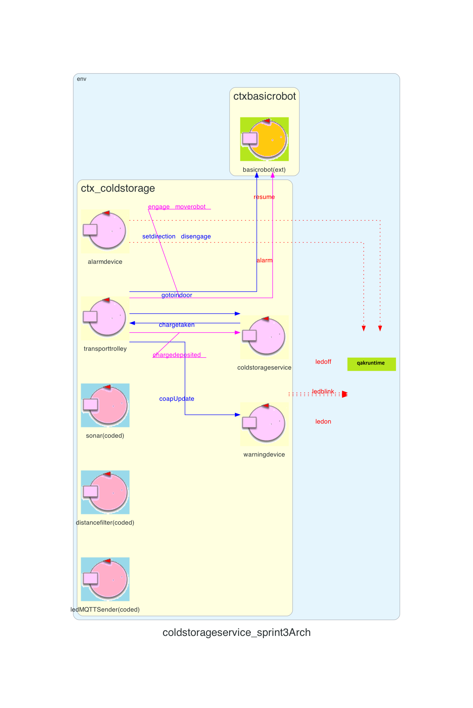

Introduction
Considerando sufficiente per adesso il lavoro svolto sul componente ServiceAccessGUI presentato nello Sprint2, lo Sprint3 si impegna a soddisfare gli Alarm Requirements, introducendo i componenti Alarm Device e Warning Device.Requirements
Descrizione del
TemaFinale23
Goals Sprint 3
- Identificare ed analizzare tutti i problemi relativi ai requisiti che coinvolgono la Alarm Device e il Warning Device
- Integrare al sistema realizzato nello Sprint2 la Alarm Device e il Warning Device, verificando che soddisfino gli Alarm Requirements
- Sviluppare il software da collocare sulla scheda Raspberry Pi con i componenti hardware collegati (sonar e led)
- Testare il sistema
Requirement analysis
Chiarimenti del committente
L'interazione con il committente ha permesso di chiarire alcuni aspetti del progetto:- Il Led e il Sonar possono non essere montati a bordo del DDR Robot
- Il Transport Trolley deve fermarsi il prima possibile alla ricezione di un Alarm
Sistema
Il macro-componente identificato che si va ad aggiungere al prodotto degli sprint precedenti è warning ed alarm devices:- un Led
- un Sonar
- una scheda Raspberry Pi che identificherà il nodo computazionale dei due device
- cavetti jumper femmina-femmina per permettere i collegamenti tra Sonar, Led e Raspberry Pi
Analisi
Dai requisiti espressi nel Tema Finale e dalle analisi già effettuate negli Sprint0, Sprint1 e Sprint2, in questo Sprint occorre analizzare le entità:- Alarm Device, che si occupa di notificare quando viene rilevato un oggetto a una distanza sotto la soglia DLIMT, al fine di fermare il Transport Trolley
- Warning Device, che si occupa di mostrare lo stato del Transport Trolley tramite un Led
Inoltre questi rappresentano gli Alarm Requirements che dovranno essere sempre soddisfatti per fare in modo che il Transport Trolley si comporti in linea con i requisiti forniti dal committente.
alarm device
L'alarm device è un componente costituito da un Sonar che è in grado di misurare la distanza tra sè ed un ostacolo posto di fronte. Quando il Sonar rileva una distanza minore di una soglia DLIMT il Transport Trolley deve essere fermato, fino a che non viene rilevata una distanza maggiore a DLIMT.Il Transport Trolley si deve fermare quando il sonar rileva una distanza
minore di
una soglia DLIMT.
Nota importante è che il Transport Trolley non può essere fermato due volte consecutive entro un lasso di
tempo pari a MINT millisecondi (ovvero deve intercorrere un tempo MINT millisecondi tra uno stop
e quello successivo).
Il Transport Trolley non può essere fermato due volte consecutive entro un
lasso di
tempo pari a MINT millisecondi.
warning device
Il warning device è un componente costituito da un Led che comunica lo stato del Transport trolley. Il Led può rappresentare 3 stati diversi:- Transport Trolley in HOME: il Led è spento
- Transport Trolley in movimento: il Led lampeggia con un intervallo costante
- Transport Trolley è fermo: il Led è acceso
Gli stati del Led sono tre: spento se il TransportTrolley è in
HOME, acceso se
fermo, lampeggiante se in movimento.
Analisi del Problema
Soluzione: il basicrobot23 a nostra disposizione è già in ascolto di un evento alarm il cui effetto è quello di interrompere l'azione che stava compiendo, quindi si può utilizzare questo sistema.
L'evento alarm viene recepito direttamente dal basicrobot23 ma bisogna occuparsi comunque di inviare al Transport Trolley tale informazione per informarlo dell'accaduto, siccome la reply del moverobot(coordinate) in casi di fallimento non restituisce la loro causa.
Per soddisfare gli Alarm Requirements l'alarm device emetterà un
alarm
per fermare direttamente il transportrolley
Per quanto riguarda invece la resume, quando il Sonar rileverà di nuovo una distanza che permetterà lo
sblocco del Transport Trolley, verrà emesso un evento che il Transport Trolley riceverà e si
impegnerà a sbloccare il robot dall'operazione su cui si era fermato, riprendendo così la sua routine.
L'alarm device emetterà un evento resume, ed il
TransportTrolley si impegnerà a riattivare il robot.
Soluzione: quando il Transport Trolley verrà rimesso in movimento dopo uno stop, dovrà riprendere dal punto dove si era fermato, concludendo correttamente la richiesta a cui stava lavorando.
Il Transport Trolley fermato per via della soglia violata tornerà a svolgere
il compito su cui stava lavorando una volta conclusosi l'allarme.
Dato che il Transport Trolley comunica con basicrobot23 tramite il solo comando moverobot(coordinate), la risoluzione della casisitica risulta agevolata: quando il Transport Trolley viene fermato da un alarm per riprendere ciò che stava facendo è sufficiente ripetere lo stesso comando moverobot(coordinate) che non era andato a buon fine per via dell'evento straordinario. Questo è dovuto dal fatto che indipendentemente dalla posizione del Transport Trolley, comunicando a questo ultimo moverobot(coordinate) il risultato sarà il medesimo, ovvero raggiungere la posizione richiesta.
Per continuare il compito che il TransportTrolley aveva lasciato in sospeso
per via dello stop è necessario ripetere l'ultimo comando (quello non andato a buon fine).
Soluzione: leggendo con attenzione il Tema Finale il Transport Trolley una volta ripresa l'esecuzione a seguito di uno stop può subirne un altro solo dopo MINT millisecondi dalla ultima resume. Si possono presentare 3 scenari:
- Arriva uno stop dopo MINT millisecondi e il Transport Trolley è in movimento
- Arriva uno stop prima di MINT millisecondi e il Transport Trolley è in movimento
- Arriva uno stop e il Transport Trolley è ancora fermo dallo stop precedente

Il TransportTrolley non si può fermare prima di MINT millisecondi
dall'ultima resume.
Si adotta il pattern Observer che permette al Led di venire notificato ogni volta che un cambio di stato del TransportTrolley a lui interessante succede. Il warning device implementa la logica di gestione. Il led deve considerare anche quando il robot è fermo perché sta caricando/scaricando il carico.
Il warning device viene notificato ad ogni cambiamento di stato del
TransportTrolley.
La comunicazione verso il Raspberry avviene tramite protocollo MQTT, seguendo la seguente catena di attori:
- Warning Device, che osserva cambiamenti nel TransportTrolley
- LedMQTTSender, che invia i comandi al Raspberry
- LedMQTTReceiver, che riceve i comandi e li attua
La gestione del led coinvolge tre attori
In particolare si valuta di adottare più attori, ognuno con uno scopo ben preciso:
- SonarMQTTSender, che dal Raspberry invia i dati letti dal sonar, filtrando solamente valori interessanti(compresi tra 1 e 200)
- SonarMQTTReceiver, che riceve le distanze
- DistanceFilter, che confronta la distanza misurata con quella limite
- Alarm Device, che emette gli eventi di Stop e Resume
Gestione delle misurazioni sonar ripartita tra cinque attori
Sonar Simulator
Ai fini di test per il momento si può adottare un sonar simulatore che genera misurazioni prestabilite, per poi successivamente passare a un sonar fisico.Interazioni
| Messaggio | Mittente | Destinatario | Semantica messaggio | Descrizione |
|---|---|---|---|---|
| coapUpdate | transportrolley | warning device | Dispatch | Informa il warning device dello stato che il led deve assumere adottando il pattern Observer. Semantica Dispatch per via del fatto che si adotta un pattern Observer. |
| alarm | alarmdevice | transportrolley basicrobot |
Event | Informa chi è interessato che il DDR Robot si deve fermare. Semantica Event perchè alarm può interessare a più ascoltatori |
| obstacle | distancefilter | alarm device | Event | Parte della pipeline dei gestori delle misurazioni del sonar, che in questo caso notifica ad alarmdevice che la distanza misurata è inferiore alla soglia prestabilita DLIMT. Semantica Event perchè obstacle può interessare a più ascoltatori |
| obstaclefree | distancefilter | alarm device | Event | Parte della pipeline dei gestori delle misurazioni del sonar che in questo caso notifica ad alarmdevice che la distanza misurata è superiore alla soglia prestabilita DLIMT. Semantica Event perchè obstaclefree può interessare a più ascoltatori |
| resume | alarm device | transportrolley | Event | Il transportrolley riceve istruzione di far ripartire il robot. Semantica Event perchè######## |
Architettura logica
Codice QAK per la modellazione del sistema: ColdStorageService.qak
Il sistema da noi modellato presenta la seguente architettura logica:

Test plans
| Test | Entità coinvolte | Scenario | Comportamento atteso |
|---|---|---|---|
| testObstacle | alarm device | Il TransportTrolley sta eseguendo le sue mansioni ed all'improvviso il sonar rileva una distanza minore di DLIMT | Un evento alarm viene scatenato da alarmdevice |
| testConsecutiveObstacleGreaterDLIMT | alarm device | Il TransportTrolley sta eseguendo le sue mansioni ed all'improvviso il sonar rileva una distanza minore di DLIMT e il transportrolley si ferma. Dopo un tempo pari ad 1/3 di MINT viene effettauta la resume, riattivando il transportrolley. Successivamente dopo MINT millisecondi dal precedente stop il sonar rileva di nuovo una distanza minore di DLIMT. | In entrambi gli stop vengono emessi gli eventi alarm. |
| testConsecutiveObstacleLowerDLIMT | alarm device | Il TransportTrolley sta eseguendo le sue mansioni ed all'improvviso il sonar rileva una distanza minore di DLIMT e il transportrolley si ferma. Dopo un tempo pari ad 1/3 di MINT viene effettauta la resume, riattivando il transportrolley. Successivamente entro MINT millisecondi dal precedente stop il sonar rileva di nuovo una distanza minore di DLIMT, ma immediatamente dopo ritorna a misurare una distanza maggiore di DLIMT. | Al primo stop viene emesso l'evento alarm, ma al secondo l'evento alarm non viene scatenato. |
Project
Per inviare gli eventi tra il servizio ed il led e sonar si sceglie di utilizzare il protocollo MQTT.Questa scelta è motivata dal pensiero lungimirante e a favore dell'estendibilità di permettere in futuro molteplici Transport Trolley: i dati dovrebbero in quel caso essere a disposizione di più entità. La nostra software house è già in possesso di materiale utilizzabile per questo scopo, proprio tramite il protocollo MQTT. Trattasi di un protocollo adatto per contesti IoT dove sono coinvolti sensori, attuatori e microcontrollori di potenza ridotta.
La strategia è fare sì che il Raspberry invii esternamente tutti i valori che rileva; sarà il ColdStorageService a sfoltirli ed elaborarli, evitando di appesantire il Raspberry con ulteriori operazioni.
Siccome nell'analisi del problema si è utilizzato un simulatore del sonar per creare il QAK, il passo successivo è quello di integrarne uno fisico. Per fare ciò per il momento adottiamo un broker gratuito e a disposizione di tutti come tcp://mqtt.eclipseprojects.io che permette l'invio e la ricezione di eventi tra dispositivi fisicamente non collegati ma connessi alla rete internet. In futuro si potrà decidere di passare a un broker privato.
Per comunicare dati utilizzando MQTT bisogna definire un topic che definisce il canale di utilizzo, utile per distinguere categorie di eventi che vogliamo raggruppare. Nel nostro caso si è adottato unibo/sonar/events come topic per comunicare i dati dal Raspberry al Servizio.
Topic MQTT per il sonar: unibo/sonar/events
Prima di essere considerati da ColdStorageService, i dati vengono filtrati da:
- SonarMQTTReceiver: si impegna a ricevere i dati letti dal sonar tramite MQTT e poi propaga l'evento all'interno del contesto ctx_coldstorage
- DistanceFilter: riceve i dati e invia un evento obstacle o obstaclefree qualora le misurazioni rispettivamente siano inferiori di DLIMT oppure maggiori
Anche per comunicare con il led si utilizza MQTT, mandando un messaggio con l'ausilio dell'attore LedMQTTSender ed utilizzando unibo/led/events come topic.
Topic MQTT per il led: unibo/led/events
Per la fase di prototipazione il sonar e led saranno collegati ad un Raspberry tramite dei cavetti jumper femmina-femmina.
Il software lato Raspberry sarà organizzato nella seguente maniera:
- Un programma python che si occupa di utilizzare il sonar per estrapolare le distanze misurate
- Un programma python che cattura tali dati da standard input e li inoltra al broker nel corretto topic
- Un programma python che riceve dal broker i comandi e li inoltra su standard input
- Un programma python che legge da standard input e comanda il led
I file che definiscono il software necessario per il Raspberry sono: sonar.py, controllerMQTT.py, LedDevice.py, mqttReceiver.py
La scelta di Python è motivata dal fatto che è un linguaggio ideale per la prototipazione: rapido, con molte librerie di supporto e ben documentato. Successivamente se si desiderano performace migliori si può pensare di ottimizzare scrivendo codice di più basso livello.
Per i programmi da eseguire su Raspberry si adotta Python
I pin del Raspberry coinvolti sono:
- GPIO 4: pin TRIG sonar
- GPIO 27: pin ECHO sonar
- GPIO 25: pin led
Conclusioni
Gli output dello sprint3 sono:
- Warning Device e relativi attori e file python
- Alarm Device e relativi attori e file python
Goals Sprint 4
Si possono definire in seguito i goal relativi allo Sprint4:- Identificare ed analizzare tutti i problemi relativi ai requisiti che coinvolgono la ServiceStatusGUI
- Integrare al sistema realizzato nello Sprint3 la ServiceStatusGUI
- Realizzare l'interfaccia grafica
- Testare il sistema
By
Tassinari Gabriele, email: gabriele.tassinari2@studio.unibo.it
Baraldi Leonardo, email: leonardo.baraldi@studio.unibo.it
Koss Krystian, email: krystian.koss@studio.unibo.it


GIT repo: https://github.com/4utotune/ColdStorageService/
Tassinari Gabriele, email: gabriele.tassinari2@studio.unibo.it
Baraldi Leonardo, email: leonardo.baraldi@studio.unibo.it
Koss Krystian, email: krystian.koss@studio.unibo.it
GIT repo: https://github.com/4utotune/ColdStorageService/